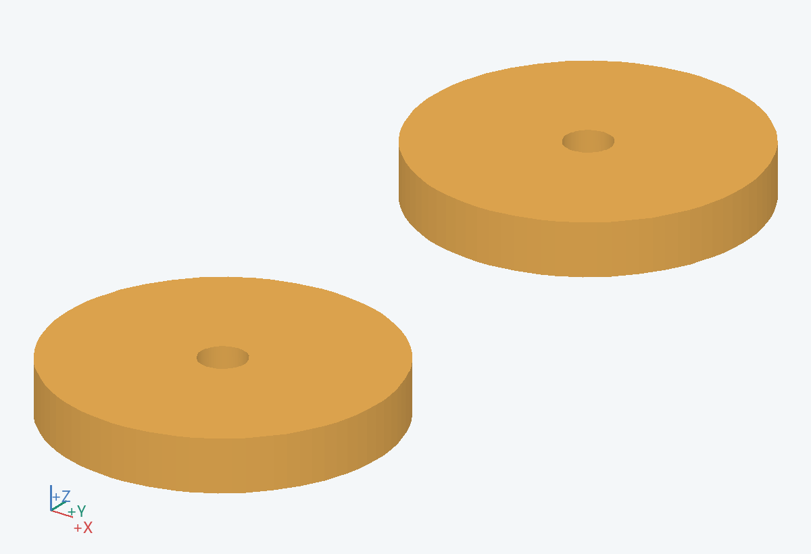
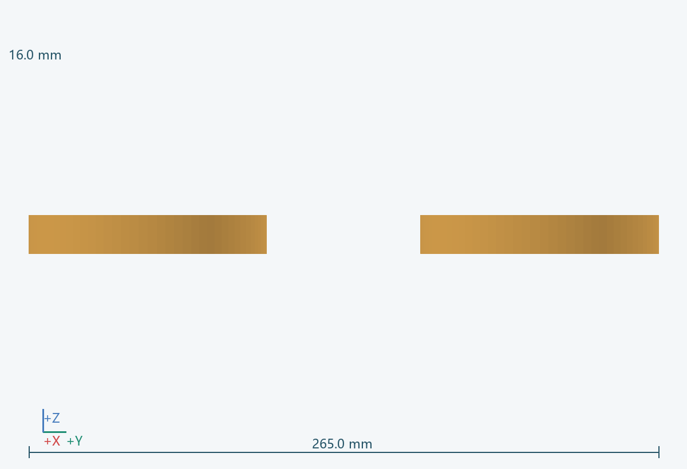
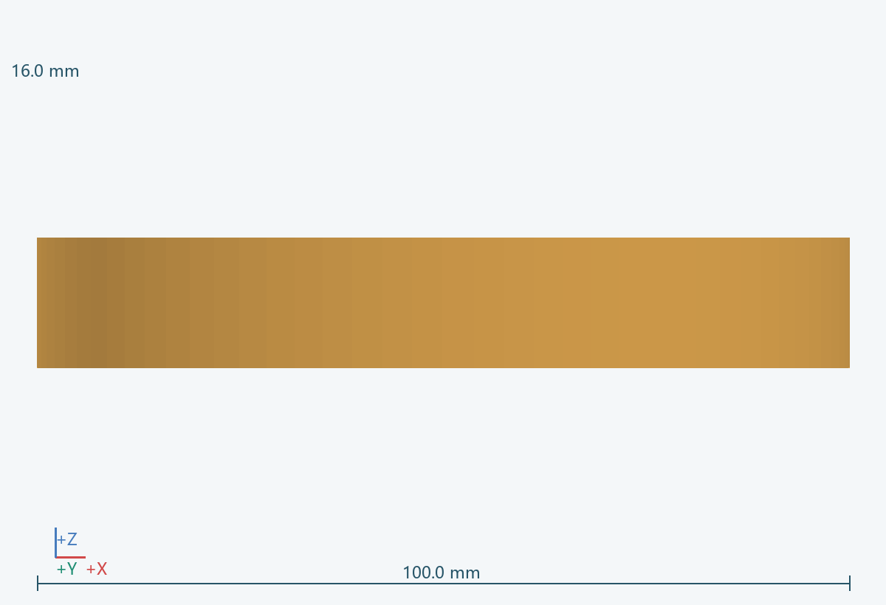
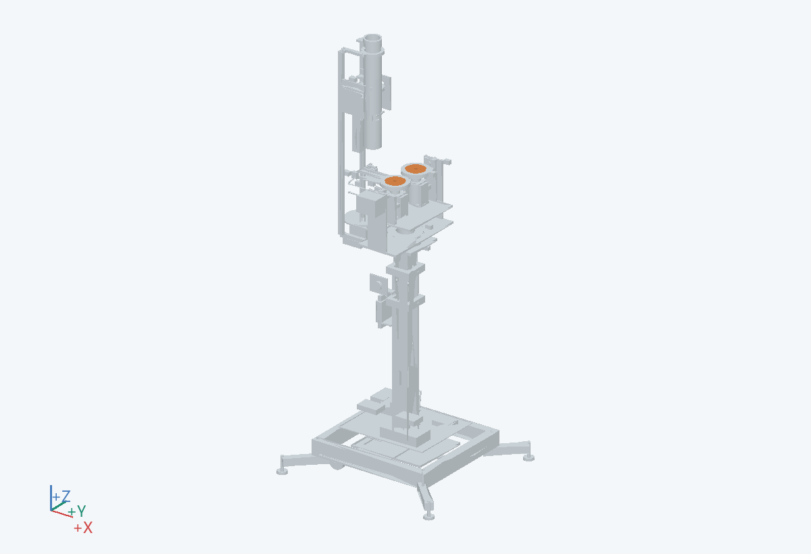

100.0 × 265.0 × 16.0 mm（含所示实例）
把主轴转矩传给弹性轮缘并提供同心安装基准。
内接 0503 轴，外接 0505；两轮中心为 H+(0,±82.5,0)。
有转速能力依据的金属轮毂
打开防护罩并确认完全停转后沿轴线拆出。
高速件须有材料、连接和动平衡依据；不能作为普通 3D 打印件直接高速使用。 关联：U01/U02/U09
PRT-0504__L, PRT-0504__R